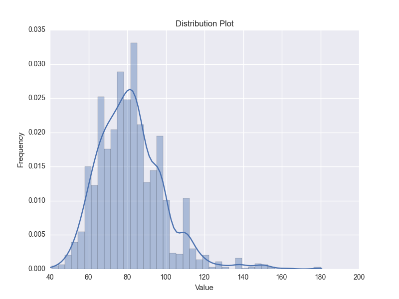

Tutorial
Some manipulations on big genomes
A script memusg is
used to check the peek memory usage of seqkit. Usage: memusg [-t] command.
-
Human genome
$ seqkit stat hsa.fa file format type num_seqs sum_len min_len avg_len max_len hsa.fa FASTA DNA 194 3,099,750,718 970 15,978,096.5 248,956,422 -
Build FASTA index (optional, when using flag
-2(--two-pass), some commands will automaticlly build it). For some commands, includingsubseq,split,sortandshuffle, when input files are (plain or gzipped) FASTA files or stdin, FASTA index would be optional used for rapid acccess of sequences and reducing memory occupation. ATTENTION: the.seqkit.faifile created by SeqKit is a little different from .fai file created by samtools. SeqKit uses full sequence head instead of just ID as key.$ memusg -t seqkit faidx --id-regexp "^(.+)$" hsa.fa -o hsa.fa.seqkit.fai elapsed time: 10.011s peak rss: 177.21 MBCreate common .fai file:
$ memusg -t seqkit faidx hsa.fa -o hsa.fa.fai2 elapsed time: 10.454s peak rss: 172.82 MBPerformance of samtools:
$ memusg -t samtools faidx hsa.fa elapsed time: 9.574s peak rss: 1.45 MBExactly same content:
$ md5sum hsa.fa.fai* 21e0c25b4d817d1c19ee8107191b9b31 hsa.fa.fai 21e0c25b4d817d1c19ee8107191b9b31 hsa.fa.fai2 -
Sorting by sequence length
$ memusg -t seqkit sort --by-length --reverse --two-pass hsa.fa > hsa.sorted.fa [INFO] create and read FASTA index ... [INFO] read sequence IDs and lengths from FASTA index ... [INFO] 194 sequences loaded [INFO] sorting ... [INFO] output ... elapsed time: 4.892s peak rss: 500.15 MBDetail:
$ seqkit fx2tab --length hsa.sorted.fa --name --only-id | cut -f 1,4 | more 1 248956422 2 242193529 3 198295559 4 190214555 5 181538259 6 170805979 7 159345973 X 156040895 8 145138636 9 138394717 11 135086622 10 133797422 12 133275309 13 114364328 14 107043718 15 101991189 16 90338345 17 83257441 18 80373285 20 64444167 19 58617616 Y 57227415 22 50818468 21 46709983 KI270728.1 1872759 KI270727.1 448248 ... real 0m10.697s user 0m11.153s sys 0m0.917s -
Shuffling sequences
$ memusg -t seqkit shuffle hsa.fa --two-pass > hsa.shuffled.fa [INFO] create and read FASTA index ... [INFO] read sequence IDs from FASTA index ... [INFO] 194 sequences loaded [INFO] shuffle ... [INFO] output ... elapsed time: 6.632s peak rss: 528.3 MB -
Spliting into files with single sequence
$ memusg -t seqkit split --by-id hsa.fa --two-pass [INFO] split by ID. idRegexp: ^([^\s]+)\s? [INFO] create and read FASTA index ... [INFO] read sequence IDs from FASTA index ... [INFO] 194 sequences loaded [INFO] write 1 sequences to file: hsa.id_KI270743.1.fa [INFO] write 1 sequences to file: hsa.id_KI270706.1.fa [INFO] write 1 sequences to file: hsa.id_KI270717.1.fa [INFO] write 1 sequences to file: hsa.id_KI270718.1.fa [INFO] write 1 sequences to file: hsa.id_KI270468.1.fa ... elapsed time: 18.807s peak rss: 1.36 GB -
Geting subsequence of some chromesomes
$ memusg -t seqkit subseq -r 1:10 --chr X --chr Y hsa.fa >X_1-10 X dna_sm:chromosome chromosome:GRCh38:X:1:156040895:1 REF nnnnnnnnnn >Y_1-10 Y dna_sm:chromosome chromosome:GRCh38:Y:2781480:56887902:1 REF NNNNNNNNNN elapsed time: 1.276s peak rss: 640.92 MB -
Geting CDS sequence of chr 1 by GTF files
$ memusg -t seqkit subseq --gtf Homo_sapiens.GRCh38.84.gtf.gz --chr X --feature cds hsa.fa > chrX.gtf.cds.fa [INFO] read GTF file ... [INFO] 22420 GTF features loaded elapsed time: 8.643s peak rss: 846.14 MB
Remove contaminated reads
-
Mapping with reads on some potential contaminate genomes, and get the reads IDs list.
$ wc -l contaminate.list 244 contaminate.list $ head -n 2 contaminate.list HWI-D00523:240:HF3WGBCXX:1:1101:2574:2226 HWI-D00523:240:HF3WGBCXX:1:1101:12616:2205 -
Remove contaminated reads
$ seqkit grep -f contaminate.list -v reads_1.fq.gz -o reads_1.clean.fq.gz $ seqkit grep -f contaminate.list -v reads_2.fq.gz -o reads_2.clean.fq.gz $ seqkit stat *.fq.gz file seq_format seq_type num_seqs min_len avg_len max_len reads_1.clean.fq.gz FASTQ DNA 2,256 226 227 229 reads_1.fq.gz FASTQ DNA 2,500 226 227 229 reads_2.clean.fq.gz FASTQ DNA 2,256 223 224 225 reads_2.fq.gz FASTQ DNA 2,500 223 224 225
Handling of aligned sequences
-
Some mock sequences (usually they will be much longer)
$ cat seqs.fa >seq1 ACAACGTCTACTTACGTTGCATCGTCATGCTGCATTACGTAGTCTGATGATG >seq2 ACACCGTCTACTTTCATGCTGCATTACGTAGTCTGATGATG >seq3 ACAACGTCTACTTACGTTGCATCGTCATGCTGCACTGATGATG >seq4 ACAACGTCTACTTACGTTGCATCTTCGGTCATGCTGCATTACGTAGTCTGATGATG -
Run multiple sequence alignment (clustalo)
clustalo -i seqs.fa -o seqs.msa.fa --force --outfmt fasta --threads=4 -
Convert FASTA format to tabular format.
$ seqkit fx2tab seqs.msa.fa seq1 ACAACGTCTACTTACGTTGCAT----CGTCATGCTGCATTACGTAGTCTGATGATG seq2 ---------------ACACCGTCTACTTTCATGCTGCATTACGTAGTCTGATGATG seq3 ACAACGTCTACTTACGTTGCATCGTCATGCTGCACTGATGATG------------- seq4 ACAACGTCTACTTACGTTGCATCTTCGGTCATGCTGCATTACGTAGTCTGATGATGor
$ seqkit fx2tab seqs.msa.fa | cut -f 2 ACAACGTCTACTTACGTTGCAT----CGTCATGCTGCATTACGTAGTCTGATGATG ---------------ACACCGTCTACTTTCATGCTGCATTACGTAGTCTGATGATG ACAACGTCTACTTACGTTGCATCGTCATGCTGCACTGATGATG------------- ACAACGTCTACTTACGTTGCATCTTCGGTCATGCTGCATTACGTAGTCTGATGATGFor me, it's useful when 1) manually assembling Sanger sequencing result, 2) designing site specific PCR primers.
-
Remove gaps
$ seqkit seq seqs.msa.fa -g >seq1 ACAACGTCTACTTACGTTGCATCGTCATGCTGCATTACGTAGTCTGATGATG >seq2 ACACCGTCTACTTTCATGCTGCATTACGTAGTCTGATGATG >seq3 ACAACGTCTACTTACGTTGCATCGTCATGCTGCACTGATGATG >seq4 ACAACGTCTACTTACGTTGCATCTTCGGTCATGCTGCATTACGTAGTCTGATGATG
Play with miRNA hairpins
Dataset
hairpin.fa.gz
from The miRBase Sequence Database -- Release 21
Quick glance
-
Sequence number
$ seqkit stat hairpin.fa.gz file format type num_seqs sum_len min_len avg_len max_len hairpin.fa.gz FASTA RNA 28,645 2,949,871 39 103 2,354 -
First 10 bases
$ zcat hairpin.fa.gz | seqkit subseq -r 1:10 | seqkit sort -s | seqkit seq -s | head -n 10 AAAAAAAAAA AAAAAAAAAA AAAAAAAAAG AAAAAAAAAG AAAAAAAAAG AAAAAAAAAU AAAAAAAAGG AAAAAAACAU AAAAAAACGA AAAAAAAUUAhmm, nothing special, non-coding RNA~
Repeated hairpin sequences
We may want to check how may identical hairpins among different species there are.
seqkit rmdup could remove duplicated sequences by sequence content,
and save the replicates to another file (here is duplicated.fa.gz),
as well as replicating details (duplicated.detail.txt,
1th column is the repeated number,
2nd column contains sequence IDs seperated by comma).
$ seqkit rmdup -s -i hairpin.fa.gz -o clean.fa.gz -d duplicated.fa.gz -D duplicated.detail.txt
$ head -n 5 duplicated.detail.txt
18 dre-mir-430c-1, dre-mir-430c-2, dre-mir-430c-3, dre-mir-430c-4, dre-mir-430c-5, dre-mir-430c-6, dre-mir-430c-7, dre-mir-430c-8, dre-mir-430c-9, dre-mir-430c-10, dre-mir-430c-11, dre-mir-430c-12, dre-mir-430c-13, dre-mir-430c-14, dre-mir-430c-15, dre-mir-430c-16, dre-mir-430c-17, dre-mir-430c-18
16 hsa-mir-29b-2, mmu-mir-29b-2, rno-mir-29b-2, ptr-mir-29b-2, ggo-mir-29b-2, ppy-mir-29b-2, sla-mir-29b, mne-mir-29b, ppa-mir-29b-2, bta-mir-29b-2, mml-mir-29b-2, eca-mir-29b-2, aja-mir-29b, oar-mir-29b-1, oar-mir-29b-2, rno-mir-29b-3
15 dme-mir-125, dps-mir-125, dan-mir-125, der-mir-125, dgr-mir-125-1, dgr-mir-125-2, dmo-mir-125, dpe-mir-125-2, dpe-mir-125-1, dpe-mir-125-3, dse-mir-125, dsi-mir-125, dvi-mir-125, dwi-mir-125, dya-mir-125
13 hsa-mir-19b-1, ggo-mir-19b-1, age-mir-19b-1, ppa-mir-19b-1, ppy-mir-19b-1, ptr-mir-19b-1, mml-mir-19b-1, sla-mir-19b-1, lla-mir-19b-1, mne-mir-19b-1, bta-mir-19b, oar-mir-19b, chi-mir-19b
13 hsa-mir-20a, ssc-mir-20a, ggo-mir-20a, age-mir-20, ppa-mir-20, ppy-mir-20a, ptr-mir-20a, mml-mir-20a, sla-mir-20, lla-mir-20, mne-mir-20, bta-mir-20a, eca-mir-20a
The result shows the most conserved miRNAs among different species,
mir-29b, mir-125, mir-19b-1 and mir-20a.
And the dre-miR-430c has the most multicopies in Danio rerio.
Hairpins in different species
-
Before spliting by species, let's take a look at the sequence names.
$ seqkit seq hairpin.fa.gz -n | head -n 3 cel-let-7 MI0000001 Caenorhabditis elegans let-7 stem-loop cel-lin-4 MI0000002 Caenorhabditis elegans lin-4 stem-loop cel-mir-1 MI0000003 Caenorhabditis elegans miR-1 stem-loopThe first three letters (e.g.
cel) are the abbreviation of species names. So we could split hairpins by the first letters by defining custom sequence ID parsing regular expression^([\w]+)\-.By default,
seqkittakes the first non-space letters as sequence ID. For example,FASTA head ID >123456 gene name 123456 >longname longname >gi|110645304|ref|NC_002516.2| Pseudomona gi|110645304|ref|NC_002516.2| But for some sequences from NCBI, e.g.
>gi|110645304|ref|NC_002516.2| Pseudomona, the ID isNC_002516.2. In this case, we could set sequence ID parsing regular expression by flag--id-regexp "\|([^\|]+)\| "or just use flag--id-ncbi. If you want theginumber, then use--id-regexp "^gi\|([^\|]+)\|". -
Split sequences by species. A custom ID parsing regular expression is used,
^([\w]+)\-.$ seqkit split hairpin.fa.gz -i --id-regexp "^([\w]+)\-" --two-passTo reduce memory usage when splitting big file, we should always use flag
--two-pass -
Species with most miRNA hairpins. Third column is the sequences number.
$ cd hairpin.fa.gz.split/; $ seqkit stat hairpin.id_* | csvtk space2tab | csvtk -t sort -k num_seqs:nr | csvtk -t pretty| more file format type num_seqs sum_len min_len avg_len max_len hairpin.id_hsa.fasta FASTA RNA 1,881 154,242 82 82 82 hairpin.id_mmu.fasta FASTA RNA 1,193 107,370 90 90 90 hairpin.id_bta.fasta FASTA RNA 808 61,408 76 76 76 hairpin.id_gga.fasta FASTA RNA 740 42,180 57 57 57 hairpin.id_eca.fasta FASTA RNA 715 89,375 125 125 125 hairpin.id_mtr.fasta FASTA RNA 672 231,840 345 345 345Here, a CSV/TSV tool csvtk is used to sort and view the result.
For human miRNA hairpins
-
Length distribution.
seqkit fx2tabcould show extra information like sequence length, GC content. A distribution ploting script is used, ( plot_distribution.py )$ seqkit fx2tab hairpin.id_hsa.fa.gz -l | cut -f 3 | plot_distribution.py -o hairpin.id_hsa.fa.gz.lendist.png
Bacteria genome
Dataset
Pseudomonas aeruginosa PAO1, files:
- Genbank file
PAO1.gb - Genome FASTA file
PAO1.fasta - GTF file
PAO1.gtfwas created withextract_features_from_genbank_file.py, byextract_features_from_genbank_file.py PAO1.gb -t . -f gtf > PAO1.gtf
Motif distribution
Motifs
$ cat motifs.fa
>GTAGCGS
GTAGCGS
>GGWGKTCG
GGWGKTCG
-
Sliding. Remember flag
--id-ncbi, do you? By the way, do not be scared by the long flag--circle-genome,--stepand so on. They have short ones,-c,-s$ seqkit sliding --id-ncbi --circular-genome --step 20000 --window 200000 PAO1.fasta -o PAO1.fasta.sliding.fa $ seqkit stat PAO1.fasta.sliding.fa file format type num_seqs sum_len min_len avg_len max_len PAO1.fasta.sliding.fa FASTA DNA 314 62,800,000 200,000 200,000 200,000 -
Locating motifs
$ seqkit locate --id-ncbi --ignore-case --degenerate --pattern-file motifs.fa PAO1.fasta.sliding.fa -o PAO1.fasta.sliding.fa.motifs.tsv -
Ploting distribution (plot_motif_distribution.R)
# preproccess $ perl -ne 'if (/_sliding:(\d+)-(\d+)\t(.+)/) {$loc= $1 + 100000; print "$loc\t$3\n";} else {print}' PAO1.fasta.sliding.fa.motifs.tsv > PAO1.fasta.sliding.fa.motifs.tsv2 # plot $ ./plot_motif_distribution.RResult

Find multicopy genes
-
Get all CDS sequences
$ seqkit subseq --id-ncbi --gtf PAO1.gtf --feature cds PAO1.fasta -o PAO1.cds.fasta $ seqkit stat *.fasta file format type num_seqs sum_len min_len avg_len max_len PAO1.cds.fasta FASTA DNA 5,572 5,593,306 72 1,003.8 16,884 PAO1.fasta FASTA DNA 1 6,264,404 6,264,404 6,264,404 6,264,404 -
Get duplicated sequences
$ seqkit rmdup --by-seq --ignore-case PAO1.cds.fasta -o PAO1.cds.uniq.fasta --dup-seqs-file PAO1.cds.dup.fasta --dup-num-file PAO1.cds.dup.text $ cat PAO1.cds.dup.text 6 NC_002516.2_500104:501120:-, NC_002516.2_2556948:2557964:+, NC_002516.2_3043750:3044766:-, NC_002516.2_3842274:3843290:-, NC_002516.2_4473623:4474639:+, NC_002516.2_5382796:5383812:- 2 NC_002516.2_2073555:2075438:+, NC_002516.2_4716660:4718543:+ 2 NC_002516.2_2072935:2073558:+, NC_002516.2_4716040:4716663:+ 2 NC_002516.2_2075452:2076288:+, NC_002516.2_4718557:4719393:+
Flanking sequences
-
Get CDS and 1000 bp upstream sequence
$ seqkit subseq --id-ncbi --gtf PAO1.gtf --feature cds PAO1.fasta --up-stream 1000 -
Get 1000 bp upstream sequence of CDS, NOT including CDS.
$ seqkit subseq --id-ncbi --gtf PAO1.gtf --feature cds PAO1.fasta --up-stream 1000 --only-flank